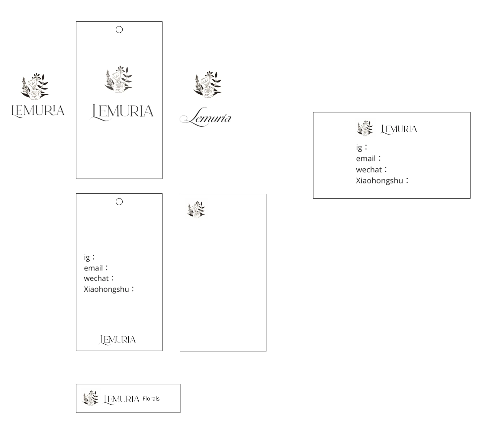

Lemuria
A floral identity with
room for the unexpected.
ProjectBrand identity for a floral business I co-founded.
Wordmark studies · Business cards · Packaging applications
Visual languageExpressive botanical imagery, an elegant serif wordmark, and a consistent signature across print and flowers.


One signature.
Different personalities.
The business cards pair the same white wordmark with changing floral imagery. Blue orchids, dusky petals, sculptural blooms, and warm orange flowers give each card its own atmosphere while keeping the brand immediately recognizable.

Selected original business-card artwork, 2023. Shown as flat designs.
Finding the
visual language.
The early layout sheet explores a botanical emblem, serif and script wordmarks, and horizontal and vertical compositions. Card and tag layouts test how the identity can carry both a strong visual signature and practical contact information.

Original identity and layout exploration. Contact fields are placeholders in the design study.
A signature
around the flowers.
On finished bouquets, the wordmark moves from the card onto a dark ribbon. Its restrained white lettering stays legible against varied flower colors, connecting the printed identity to the object a customer receives.


Original Lemuria bouquet photographs showing the identity in use.
Lemuria brought visual design into the everyday details of a small business: the first impression of a card, the consistency of a name, and the finishing touch on a bouquet.